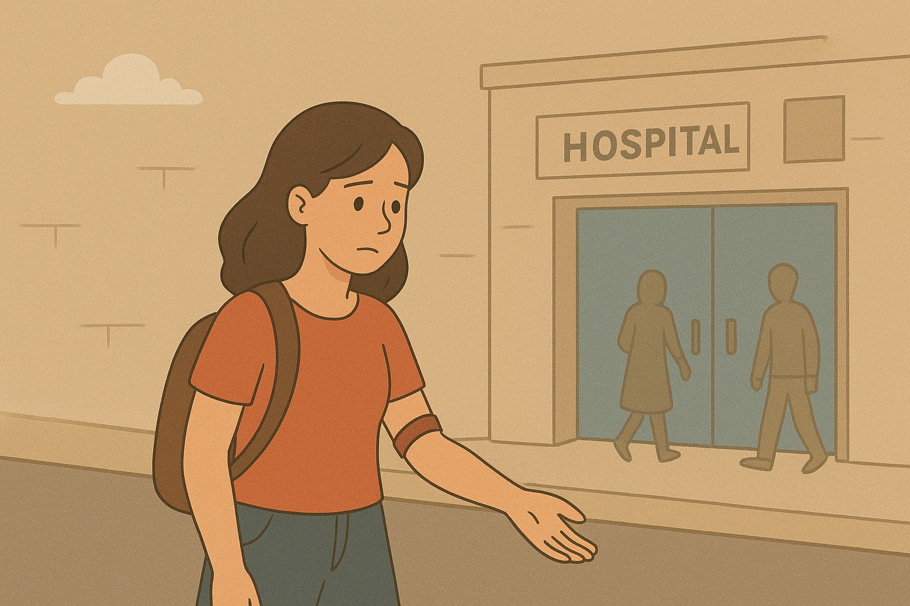

Ana olhou para a agulha e sentiu um arrepio. O medo foi maior. Ela agradeceu e saiu do hospital, tentando se convencer de que “não era a hora”. Horas depois, recebeu uma mensagem:
“Seu amigo sofreu um acidente e precisa de sangue urgente.”
Ana gelou.
